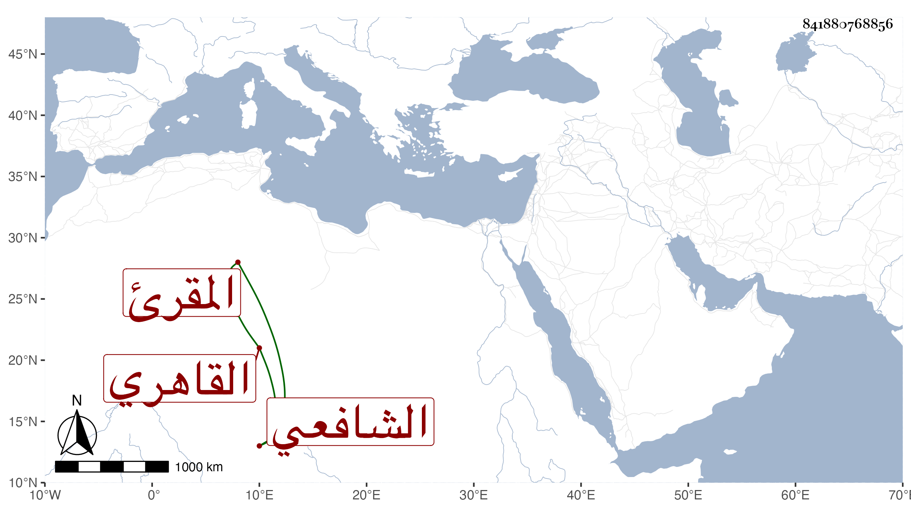

0902Sakhawi.DawLamic.ITO20230111-ara1.EIS1600.841880768856
Biography ID: 841880768856
180
محمد بن محمد بن أبي بكر الشمس بن النظام القاهري الشافعي المقرئ نزيل سعيد السعداء والبراذعي أبوه ويلقب مشاقة . نشأ فحفظ القرآن وتعاني التجويق حتى صار في آحاد الرؤساء وسمع على شيخنا وغيره ، اشتغل عند الزين البوتيجي وأكثر من شهود مجالس الخير حتى أنه حضر عندي في الاملاء وغيره كثيرا ، ولم يتميز ولاكاد مع خيره وكتابته الكثيرة التي قل الانتفاع بها وانجماعه على شأنه بالخانقاه غالبا وصاهر ابن قاسم على أخته فاستولدها ولذا تعب كل منهما به وأدخل حبس المجرمين حتى مات ، ومما كتبه الحلية لأبي نعيم بل كان يكتب شيئا من الوقائع . مات في ثاني رجب سنة اثنتين وتسعين وصلى عليه ثم دفن بحوش الصوفية وأظنه جاز الستين رحمه الله وإيانا .
